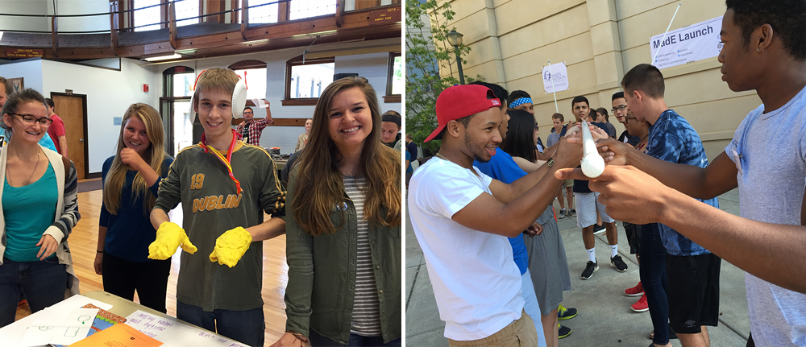

Twenty higher education institutions are welcoming their incoming students in a unique way as part of a national STEM initiative called #uifresh. Participating institutions are exposing freshmen to design thinking, entrepreneurship, and innovation in order to attract and retain more students in STEM disciplines.

20 Colleges and Universities Launch Innovative
Orientation Activities to Retain STEM Students
September 2, 2015 — As this academic year begins, 20 higher education institutions are welcoming their incoming students in a unique way as part of a national STEM initiative called #uifresh (University Innovation Freshmen). Through this initiative, participating institutions are exposing incoming freshmen to design thinking, entrepreneurship, and innovation in order to attract and retain more students in STEM disciplines. Ten new schools have joined the 10 schools that committed to #uifresh earlier this year.
The initiative was created by the University Innovation Fellows, a national student organization, to combat STEM attrition in the United States. According to a report published by the President’s Council of Advisors on Science and Technology, about 60 percent of students who arrive at college intending to major in STEM subjects switch to other subjects, often in their first year. The initiative was launched on March 23, 2015, during the White House Science Fair as part of a White House collection of initiatives to further enhance STEM in the U.S.
The University Innovation Fellows program is run by the National Center for Engineering Pathways to Innovation (Epicenter), which is funded by the National Science Foundation and directed by Stanford University and VentureWell. The program empowers students to become change agents in higher education who help their peers develop an entrepreneurial mindset and creative confidence.
The 10 new schools joining the initiative are members of Epicenter’s Pathways to Innovation Program, which helps faculty and administrators fully incorporate innovation and entrepreneurship into undergraduate engineering education.
10 new institutions joined the initiative:
- Clemson University
- Florida Institute of Technology
- Howard University
- James Madison University
- New Mexico State University
- Temple University
- Texas A&M University
- Universidad del Turabo
- University of Delaware
- University of Pittsburgh
10 institutions joined the initiative in March 2015:
- Clark Atlanta University
- Michigan Technological University
- NYU Polytechnic School of Engineering
- North Dakota State University
- Union College
- University of Florida
- University of Minnesota
- University of Oklahoma
- University of Virginia
- William Jewell College
From mid-August to mid-September 2015, students, faculty and institution leaders at the 20 #uifresh schools are collaborating with orientation week organizers to provide learning opportunities for incoming students that are fun, experiential, creative and lead to increased engagement on campus. All institutions secured letters of support from their college and university leaders in order to join the initiative.
Participating schools are organizing a wide variety of specially designed freshmen orientation activities, workshops and courses including the following:
|
On August 17, Universidad del Turabo held the activity “Melting Pot Fresh Faculty.” Professors of freshman seminar classes were introduced to entrepreneurship, innovation, creativity and the design thinking methodology. The goal was to help faculty develop confidence in designing experiences and projects to help their students develop skills in these areas.
On August 24, North Dakota State University hosted the activity “I3: Ignite Innovative Ideas.” Students relaxed on hammocks and discussed innovative and entrepreneurial activities on campus and in the community. They then took part in a design thinking challenge to create a best and worst feature or change to their dorms, which helped them learn to identify the needs of their “customers” and how their ideas presented solutions.
On August 25, William Jewell College hosted the “Creativity & Innovation Orientation Workshop” for the entire incoming Class of 2019. The first activity was a design thinking workshop to help students learn empathy, consider a multitude of possible solutions to a problem, and communicate and translate complex concepts into concise explanations. The second activity allowed participants to discover the breadth of innovation in the liberal arts, envision their college experiences as a blank slate and not a checklist, and think creatively about potential opportunities and their future.
On August 26, Michigan Technological University held the activity “Chill Out with #uifresh” with 1,300 incoming first-year students from all majors. The activity, which focused on ways to cope with winter weather, introduced students to the school’s innovation and entrepreneurship ecosystem and opportunities to participate in real world problem solving activities on campus.
On August 29, James Madison University held the "Madison Engineering Launch," the official welcome for all incoming first-year students in engineering. The Launch began with several engineering-oriented games focused on awareness, communication and teamwork, all facilitated by a network of Engineering Leadership program students. The event concluded with a session focusing on reflection, departmental mission and values, understanding the freshmen class, and a design challenge bridging the event to the first day of class. During the Fall 2015 semester, James Madison also offers “ENGR101 Engineering Opportunities,” the first class in the curriculum, which fosters the exploration of engineers, engineering, and engineering work through student engagement on real community needs.
On September 3, University of Minnesota will host the event "Dare to Dream!” during College Welcome Day with all 1,100 incoming science and engineering freshmen. Participants will hear stories from upperclass student role models who are chasing their dreams as makers, entrepreneurs and STEM student leaders; learn about campus opportunities such as student groups, innovation and entrepreneurship activities and courses, and student leadership roles; and connect with their new, supportive community of peers, staff and faculty. Additionally, during their first semester, all freshmen will participate in a team-based service learning project in which they will be exposed to design thinking, customer discovery, and development of a minimum viable product.
On September 9, Union College will host an event called “STEM-UP,” where freshmen will take part in a series of activities including signing the Union College honor code, learning about current students’ STEM-related projects through poster presentations, exploring hands-on tools such as a MakerBot printer, and viewing an SAE Aero club airplane on display.
On September 10, NYU Polytechnic School of Engineering will host “What It Takes to Work at Google,” where students will hear from veteran software engineer Baris Yuskel about his experiences at Microsoft and Google. The school will host “Casual Prototyping” on September 15, where graduate students will explore challenges and creative solutions through hands-on prototyping, as well as “Design for Change” on September 16, a design thinking and ideation workshop for students sponsored by Design for America of NYU. As part of the school’s Fall 2015 “First Year Dialogue,” all incoming students are reading the book Creative Confidence and heard from speaker Hannah Chung, co-founder of Design for America and co-founder and chief creative officer of Sproutel.
On September 12, University of Virginia has proposed an “Entrepreneurship Leadership Summit,” which will connect community leaders and students in design thinking workshops to create ecosystem-level change. Additionally, Fall semester “Innovation Tours” will expose students to makerspaces and resources connected with entrepreneurship and innovation. The University of Virginia team also held a series of “Innovation Luncheons” and the “Academic Innovation Symposium" in Spring 2015.
Throughout the Fall 2015 semester, Clemson University will host DEN (Design and Entrepreneurship Network) Weekly Meetings. The DEN brings together students and faculty from any discipline to transform people and their ideas into entrepreneurial thinkers and companies. The goal of the DEN is to fundamentally change the campus culture of innovation and entrepreneurship, starting at the student and faculty level, and looking outward for mentorship and engagement of entrepreneurial community leaders and alumni.
Throughout the Fall 2015 semester, the Dwight Look College of Engineering at Texas A&M University is launching a major effort to promote the entrepreneurial mindset with the more than 3,000 engineering freshmen. The program includes in-class presentations and discussions about innovation and entrepreneurship as well as videos of successful alumni entrepreneurs. In addition, the program will give freshman teams the chance to collaborate and generate ideas to participate in the U-Ignite video pitch competition in February 2016. Freshmen may also participate in any of the six Aggies Invent events, a series of 48-hour challenges throughout the year, as well as the Innovation and Entrepreneurship Living Learning Community and Pop Up classes.
During this academic year, Howard University will hold the "Introduction to Engineering” course, which was redesigned with the help from a National Science Foundation grant to integrate innovation as major theme throughout a required first-year course. The new course plan includes interactive presentations and related assignments that develop critical and creative thinking skills in engineering and computer science majors and promote innovation in design. Coursework includes exercises in ideation and prototyping, and students use the design thinking process to complete a major design project. Through partnership with the U.S. Patent and Trademark office, the school developed a three-week course module to expose students to topics related to intellectual property and commercialization. Some students from the Fall 2014 offering of the course have already launched into entrepreneurial endeavors.
During this academic year, University of Delaware will hold “EGGG 101,” the first year experience course for all students in the College of Engineering. The course has been redesigned for this year to focus on the basics of the design process, engage students in project focused on the National Academy of Engineering’s Grand Challenges for Engineering and introduce them to the basics of innovation and entrepreneurship.
To read the #uifresh institutions’ commitment letters, please visit universityinnovationfellows.org.
The University Innovation Fellows and Pathways to Innovation Program are both currently accepting applications. Visit universityinnovationfellows.org/apply to learn more about the University Innovation Fellows program (deadline October 26) and visit epicenter.stanford.edu/pathways-to-innovation to learn more about the Pathways to Innovation Program (deadline September 21).
About Epicenter:
The National Center for Engineering Pathways to Innovation (Epicenter) is funded by the National Science Foundation and directed by Stanford University and VentureWell. Epicenter’s mission is to empower U.S. undergraduate engineering students to bring their ideas to life for the benefit of our economy and society. To do this, Epicenter helps students combine their technical skills, their ability to develop innovative technologies that solve important problems, and an entrepreneurial mindset and skillset. Epicenter’s three core initiatives are the University Innovation Fellows program for undergraduate engineering students and their peers; the Pathways to Innovation Program for institutional teams of faculty and university leaders; and the Fostering Innovative Generations Studies research program that informs activities and contributes to national knowledge on entrepreneurship and engineering education. Learn more and get involved at epicenter.stanford.edu.
About Stanford University:
At Stanford University, the Epicenter collaboration is managed by the Stanford Technology Ventures Program (STVP), the entrepreneurship center in Stanford’s School of Engineering. STVP delivers courses and extracurricular programs to Stanford students, creates scholarly research on high-impact technology ventures, and produces a large and growing collection of online content and experiences for people around the world. Visit us online at stvp.stanford.edu.
About VentureWell:
VentureWell was founded in 1995 as the National Collegiate Inventors and Innovators Alliance (NCIIA) and rebranded in 2014 to underscore its impact as an education network that cultivates revolutionary ideas and promising inventions. A not-for-profit organization reaching more than 200 universities, VentureWell is the leader in funding, training, coaching and early investment that brings student innovations to market. Inventions created by VentureWell grantees are reaching millions of people in more than 50 countries and helping to solve some of our greatest 21st century challenges. Visit www.venturewell.org to learn how we inspire students, faculty and investors to transform game-changing ideas into solutions for people and the planet.
Media contact:
Laurie Moore
Communications Manager, Epicenter
(650) 561-6113
llhmoore@stanford.edu